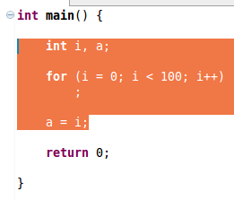
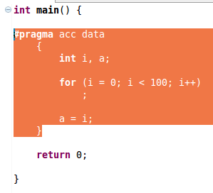

Introduce OpenACC Data Construct
Use:
Data constructs are used to control data transfer to and from an accelerator device.
Description:
Creates a data construct around the selected statements.
Example:
- Select the desired section of code to be changed and choose Introduce Data Construct under the Refactoring menu.

- The resulting construct.

Restrictions:
None